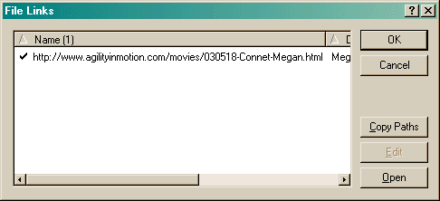

The Find Links Dialog allows you to locate all files and addresses that exist outside of the current file. This is convenient when you want to copy the file to another computer. Since these items exist outside of the file, when you copy the file, they will not be copied also. This dialog provides a list of items that you may want to copy.

If there is a check mark at the start of the item, the file or address exists. If it could not be located, there will be a question mark there.